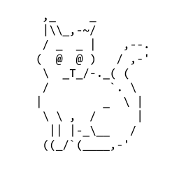
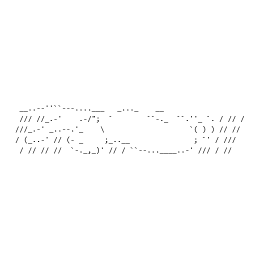
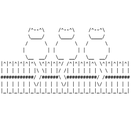
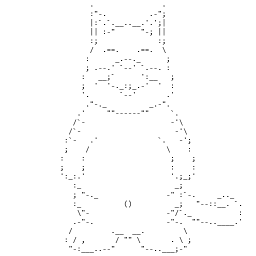
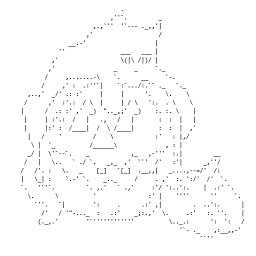
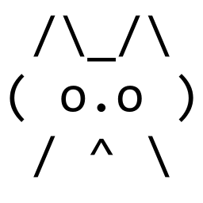
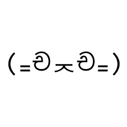

Categorias C4T
Id:
| Id | Gato | Nombre | Descripción | |
|---|---|---|---|---|
| 1 | Eusebia | Eusebia es una gatita que fue rescatada en un chat en el año 2007, si la rescatas no tendrás mas ratones en tu casa, ya que ella los debora. | ||
| 2 | Rallita | Rallita es una fiel gata guardiana, estará todo el día vigilando que no le pase nada a tu hogar, incluso vigila mas que la tipica vecina del barrio. | ||
| 3 | Jerry | Jerry es un gato triste que fue abandonado en yahoo respuestas. Muchos gatos le hacen bullying por tener nombre de ratón, es por eso que Jerry te necesita mas que nunca. | ||
| 4 |  | Carlitos | Carlitos... un gato feliz que fue desechado, aun así, no pierde la sonrisa en su cara esperando que lo rescates y lo utilices en algún foro. | |
| 5 | Felix | Félix. Uno de los primeros michis en nacer (o ser digitado). Este michi posee mucha experiencia, es un gato maduro y conocedor del código fuente de muchas webs. | ||
| 6 |  | Cleo | Cleo es una Preciosa gatita albina, tiene heterocromía y es muy juguetona, le gustan las piñas coladas y caminar bajo la lluvia. | |
| 7 | 
| Shere Khan | Shere Khan es un hábil cazador, puede olfatear a su presa a gran distancia. Este hábil felino se crio en las selvas de India. Se dice que allí fue el más temido de toda la jungla. | |
| 8 |  | Shanell, Spencer y Diva | Son Shanell, Spencer y Diva. Estos 3 gatos son inseparables, aunque no hacen mucho la verdad, solo se la pasan viendo y juzgando a todo el que pasa. | |
| 9 | Alex | Este gato lo encontramos hace un tiempo en los comentarios de una pagina de los mejores spa del país, estuvo ahí por mucho tiempo, por lo que decidimos traerlo a esta pagina. | ||
| 10 | Toto | Este amigo lleva un buen tiempo con nosotros, nos lo paso otra persona diciendo que nadie lo usaba por lo que decido entregárnoslo. | ||
| 11 |  | Jorge | Este gato en adopcion fue encontrado en un post acerca de los mejores restaurantes del país, en el cual fue completamente ignorado, por lo cual, se decidio cuidarlo y encontrarle un hogar. | |
| 12 |  | Charlie | Este gato lo encontramos en un chat de una organización para una fiesta de halloween. Después de haber sido utilizado un par de veces lo tenemos aquí. | |
| 13 | Bear | Bear es un gato de gran corazón, posteado en perfil de myspace. No mucha gente busca gatos con cara seria, por lo que ha sido tan difícil encontrarle un nuevo hogar. | ||
| 14 |  | Max | Este pequeño se llama Max, rescatado de un post de 2004, abandonado junto a fotolog. | |
| 15 |  | Neko | Neko es un travieso minino que fue rescatado de un foro de anime, del que fue importado por un extranjero. Hoy en dia espera aqui a que se le de un nuevo hogar en la segunda temporada. | |
| 16 | 
| Toby | Toby es de una raza muy común en los chats, incluso al día de hoy. Fue abandonado debido a la gran sobrepoblación de esta y, busca un nuevo hogar en tus chats. |